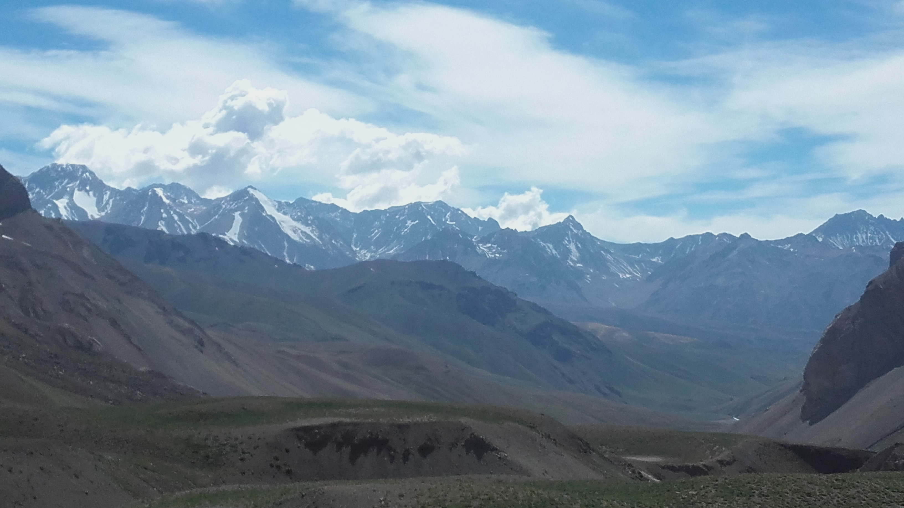
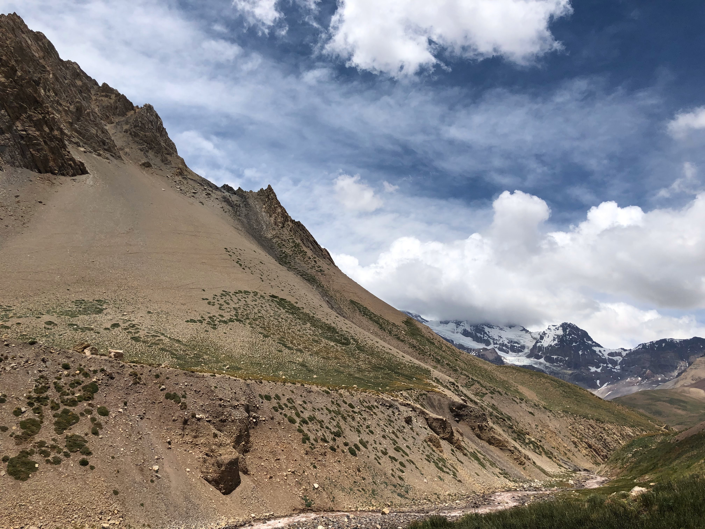
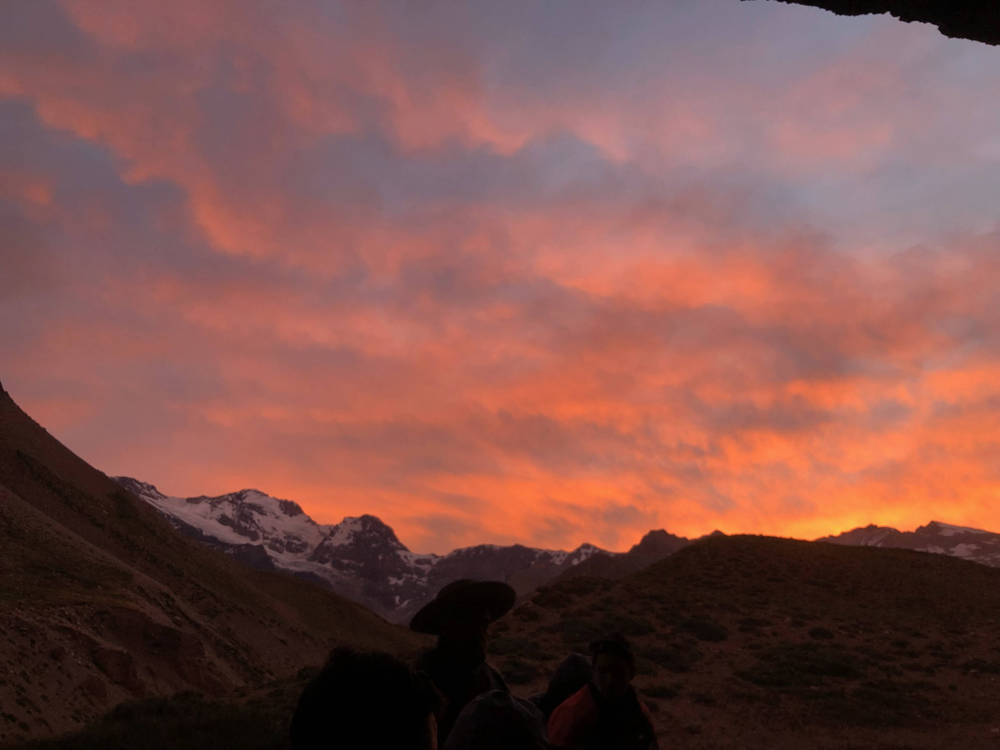
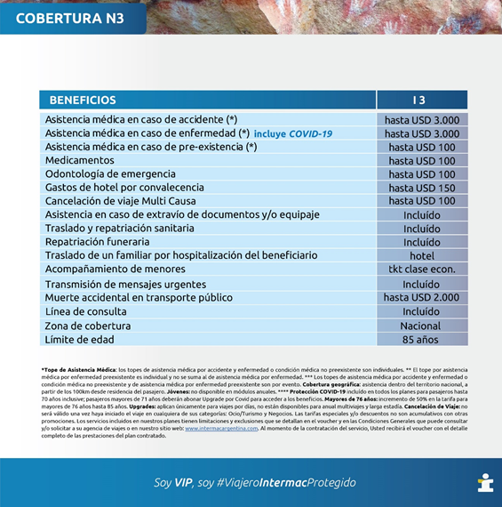

Formulario Obligatorio de Reserva
Día 1
Manzano Histórico - Campamento El Origen
Recepción en el campamento base El Origen. A partir de este momento comenzarán a disfrutar de la expedición, presentación de los guías, baqueanos y gauchos.
Se brindará la primera charla de coordinación y ajustes. Se les asignará un lugar para acomodarse, Por la tarde hay programada una caminata guiada por los puntos de interés de la comuna: el paso Histórico del General San Martin por el Manzano Histórico o M. de San Martin, visita al museo de Ciencias Naturales regional, monumento al General San Martin llamado “Retorno a la Patria”.

También recibirán una reseña histórica del paso El Portillo, la Campaña de los Andes y sus pasos, el Cristo de la Hermandad y la Plaza de Artesanos. Regreso al Origen para participar de la cena de bienvenida. Fin de los servicios.
Día 2
Campamento "El Orígen" - Scaravelli
El día comienza temprano, un desayuno de campo y mate que acompaña la mañana y hace hermandad entre los reunidos, baqueanos y gauchos.
Preparamos el equipaje y la carga y nos reunimos para tener una charla y repasar todos los temas de importancia: seguridad, estado físico, asignaciones etc.
A la hora prevista nos trasladamos hasta el refugio Scaravelli, un camino en ascenso constante hasta el Refugio de Gendarmería Nacional Argentina donde presentaremos la documentación y daremos aviso de paso. A medida que el grupo termina con el trámite dispondremos de 30´ para un almuerzo ligero.

En los corrales, los baqueanos nos esperan para asignarnos el caballo y la montura. Una vez preparados y montados a los caballos comenzaremos el ascenso hasta el Refugio Scaravelli ubicado a 3200 msnm. Es una cabalgata relajada para la adaptación a la montura y caballo.
Al llegar al refugio tendrán tiempo para ver la actividad de los gauchos y baqueanos, el manejo de los caballos y mulas, escuchar sus conversaciones, sus historias, un verdadero clima de hermandad y tradición.
Nos encontramos rodeados de caudalosos arroyos y una vista del Valle de Uco que se pierde en el horizonte. Un fuego el aroma de la comida indica que el día va terminando. preparación del refugio para cenar y dormir es la última actividad del día. Primera noche de adaptación en la altura. (el refugio Scaravelli es un refugio de alta montaña con mucha años e historias).
Día 3
Scaravelli- La Olla - Real de la Cruz
La actividad de este día comienza bien temprano con el amanecer. Al despertar deberán alistar sus pertenencias equipos y presentar la carga.
Se servirá el desayuno, Antes de salir habrá un repaso físico y médico, una introducción sobre la expedición, sus cuidados y la seguridad. Asignación de los caballos y monturas.
Una vez preparados se dará comienzo a la cabalgata con destino al Portillo Argentino a 4300 msnm. El camino nos lleva a nuestra primera parada llamada Yareta. Aquí nace una vertiente de agua y un mástil con la bandera argentina conmemorando El Cruce, el agua surge desde la entraña de la montaña dando inicio al caudaloso Arroyo Grande.

Un largo sendero en ascenso nos lleva al histórico Portillo Argentino. Al llegar realizaremos una breve parada para apreciar este punto frontal de la cordillera, habrá tiempo para sacar fotos. Revisamos las cinchas de la montura y a la voz del guía montaremos y daremos comienzo al empinado y zigzagueante descenso por un angosto sendero que nos llevará hasta El Real de la Cruz La Olla.
Una jornada exigente en todos los aspectos, la vista es imponente y gratificante, cumplido el objetivo de una de las jornadas más difíciles. Llegamos al campamento para estirar las piernas y descansar, asignación de los lugares para dormir.
Reponemos energía con un buen fuego y una rica cena. Al atardecer el valle se transforma en un planetario, a simple vista se aprecia la belleza de las estrellas, de las galaxias, el cosmos, el infinito mismo.
Día 4
Real de la Cruz - Portillo Chileno, Paso Piuquenes - Caleton
Este día comienza con el desayuno, una charla del día por venir y la seguridad hoy cruzaremos el caudaloso rio Tunuyán.
Los gauchos y baqueanos alistan los caballos una vez preparados saldremos y daremos comienzo a una intensa jornada hasta el Portillo Chileno. las montañas toman colores únicos, las huellas de la erosión forman profundo quebradas, la vista del Cerro Palomar, el Cerro Mil Hojas, el Cerro Marmolado, Cerro San Juan con su vistoso glaciar formado por millones de años que cubre toda su cima.
Esta parte del camino tiene entre otros como atractivo El Caleton una formación natural de piedras compactada una silueta muy particular como un balcón techado. Desde aquí a la distancia se puede apreciar el frente de las majestuosas montañas del Portillo Chileno. Un camino más exigente en ascenso constante nos lleva hasta la cima.

Al llegar se encuentra el monolito que divide la frontera entre Argentina y Chile paso fronterizo El Piuquenes, es un lugar para expresar emoción, este es un paso fronterizo histórico, el silencio se adueña del lugar, el mismo silencio que nos acompañó durante todo el camino, surge las ganas de festejar.
Un llamado de reunión para un merecido brindis, sacar fotos y pasar un bello momento un almuerzo ligero para reponer energías al termino nos alistamos para emprender un descenso por el mismo camino utilizado por el Libertador General San Martin y sus soldados después de liberar Chile y Perú, la ruta reconocida como Retorno a la Patria, una jornada con muchos matices, esta noche se duerme en el Caleton este es el lugar sugerido para experimentar el dormir a la interpedie vivenciar esta sensación, tener como techo la galaxias, satélites, estrellas te aseguro quedara grabado en vos para siempre, un tarde noche y amanecer único diferente, una conexión con la naturaleza, tiempo para descansar y disfrutar del fogón.
El andar hasta aquí deja una experiencia vivencial e espiritual única y muy rica de bellos momentos, una huella para toda la vida. Una rica cena y dar por terminado el día.
Día 5
El Caletón – Real de la Cruz
Este día comienza muy relajado en este hermoso lugar, luego de alistar nuestras pertenencias, equipo y carga se servirá el desayuno.
Una charla del día por venir, cuando todo esté listo saldremos de regreso hacia el Real, nos dirigimos por un camino serpenteante, profundo cañones, caudaloso arroyo y una vista única de las cordilleras.
transitar por estos históricos caminos emociona, una gran planicie donde la vista se pierde en el infinito rodeados de montañas hasta llegar nuevamente al caudaloso y ruidoso Rio Tunuyán para terminar en el Refugio del Real de la Cruz

a la llegada nos esperan con una buena almuerzo tiempo para descansar, tarde libre, por la noche una rica cena invita a juntarnos a la mesa para contar las experiencias y anécdotas, un muy buen vino para brindar y dar por terminado este día.
Cuartel del Ejército Argentino Real de la Cruz es una gran construcción de piedra en un lugar estratégico para el cuidado de nuestra soberanía.
El refugio fue construido en 1950 por mandato del presidente General Juan D. Perón, el Ejército Argentino construyó un cuartel recubierto en piedra de dos plantas de 2400 m2, todos los materiales se llevaron a lomo de mula.
Día 6
Real de la Cruz - Scaravelli
Este día es importante relajar el cuerpo y la cabeza, alistaremos el equipaje y la carga, al término tomaremos el desayuno, una charla informativa para el regreso.
Salida hacia la Olla acompañados de una vista sorprendente. A lo lejos se ve el Volcán Tupungato a 6570 msnm, el más colosal de toda América, montañas y picos nevados, arroyos caudalosos que con el susurrar del viento generan música ambiental.

Liebres se ven corren por las praderas, colibrí y jilgueros de montañas acompañan en nuestro andar, a lo lejos también rebaños de llamas y si la suerte está de nuestro lado avistar el vuelo de un majestuoso cóndor, a lo lejos dejamos atrás las grandes paredes montañosas que se elevan a más de 6000 msnm.
De frente el portillo argentino en empinado asenso hasta su cima para disfrutar de otra etapa y objetivo, en adelante un descendiente camino y muy pintorescos paisajes hasta llegar a Scaravelli.
A la llegada nos acomodaremos disfrutaremos de una infusión estirar el cuerpo, seguramente un fogón dará comienzo a la cena y poder reponer energía e ir a dormir.
Día 7
Scaravelli - Campamento "El Origen" - Manzano Histórico
El día comienza temprano con el amanecer, luego de desayunar nos preparamos para emprender la salida, retomando el sendero por ruta Sanmartiniana y el emocionante ascenso.
Sólo por el motivo de regresar invade la emoción, los caballos y mulas saben que regresamos y su tranco se torna más largo, su andar y sus movimientos son más asertivos por delante una vista increíble, un descenso suave y placentero.

El sendero se hace más ancho se presta para cabalgar a la par de un compañero y charlar hasta el refugio de gendarmería. Llegados al corral desmontaremos y anunciaremos nuestro regreso a las autoridades seguimos por el camino en constante descenso que nos llevara hasta el Manzano, al llegar nos asignaran lugares para descansar y tomar una confortable ducha.
Por la noche un fogón de despedida con los guías, gauchos y baqueanos, los agasajaremos con empanadas, vino y una rica carne al asador. Brindis de despedida. al termino podrán descansar en las carpas asignadas.
Día 8
Manzano Histórico
Al despertar les ofreceremos un desayuno de campo y despedirlos hasta la próxima. Fin de los servicios.

Tarifas
Retorno a La Patria Cabalgata:
ARS 95.000 No incluye imp.
Retorno a La Patria Trekking:
ARS 80.000 No incluye imp.
Salidas
| Fecha | Día | Mes | Año |
|---|---|---|---|
| 07 | Martes | Diciembre | 2021 |
| 15 | Miercoles | Diciembre | 2021 |
| 29 | Miercoles | Diciembre | 2021 |
| Año Nuevo | |||
| 04 | Martes | Enero | 2022 |
| 11 | Martes | Enero | 2022 |
| 18 | Martes | Enero | 2022 |
| 25 | Martes | Enero | 2022 |
| 01 | Martes | Febrero | 2022 |
| 08 | Martes | Febrero | 2022 |
| 15 | Martes | Febrero | 2022 |
| 22 | Martes | Febrero | 2022 |
| 01 | Martes | Marzo | 2022 |
| 08 | Martes | Marzo | 2022 |
| 15 | Martes | Marzo | 2022 |
| 22 | Martes | Marzo | 2022 |
| 02 | Martes | Abril | 2022 |
Aceptamos pago en cuotas con tarjeta
Vigencia: de Diciembre del 2021 a Abril del 2022. Las tarifas pueden sufrir cambios sin previo aviso. Las tarifas aplican para las salidas de enero/febrero/marzo: no aplica para períodos de navidad, año nuevo
Pensión Completa
Desayuno
- Pan casero
- Galletas caseras
- Mermeladas caseras
- Dulce de leche casero
- Manteca
- Frutas de estación
- Frutos secos
- Cereales
- Mate, café, leche, té y jugos
Almuerzo
- Sandwiches
- Pan casero, milanesa de carne, pollo, atún y fiambres
- Frutas de estación
- Cereales
- Frutos secos
- Golosinas
- Chocolates
- Jugos y agua
Cena
- Carne Asada
- Carne a la cacerola
- Guisados
- Pastas
- Vegetales asados
- Ensaladas
- Pan casero
- Quesos y fiambres
- Frutas de estación
- Chocolates
- Vinos, jugos y agua
Una adecuada y balanceada alimentación para sentirse con energía es muy importante durante la expedición. Si tiene preferencia por algún tipo de alimentación light, vegetariana, etc. Le solicitamos especifíquelo en la reserva. Todos los alimentos son productos frescos y bien conservados, usamos productos regionales en su mayoría caseros.
Asistencia al viajero
Con cobertura de montaña incluido

Importante como reservar: Hacer click en la opcion de Formulario Obligatorio de Reserva al comienzo del programa
SUGERENCIA PSICOFÍSICA: Preparación física
Usted participará de una expedición en la Cordillera de Los Andes, por tal motivo le sugerimos realice un trabajo de entrenamiento, Las montañas, cañones, quebradas, arroyos son terreno difícil. Las alturas varían de 1800 a 5200 msnm, cabalgar o caminar requiere de una preparación, meritan de una rutina diaria de mínimo un mes y medio previo a la salida.
Ejercicio de fortalecimiento y coordinación: extremo Superior y medio, el fortalecimiento de la masa muscular abdominal, la coordinación de los extremos superiores y su fortalecimiento y el trabajo de aductores ayudarán para generar un mejor agarre a la montura (en el caso de realizar cabalgata) y generar una mayor seguridad. Trabajo de aducción y abducción, fortalecimiento de la masa inferior con carga natural o complementaria de menor a mayor, trabajo de cuádriceps y gemelos, cardio, aeróbico. Trabajo de cinta caminadora, escalador de fuerza con peso, caminar, estiramientos de elongación. Un trabajo integral es fundamental para una mejor experiencia para esta expedición al cruce de Los Andes. Consulte con su médico de cabecera y entrenador para desarrollar estas actividades.